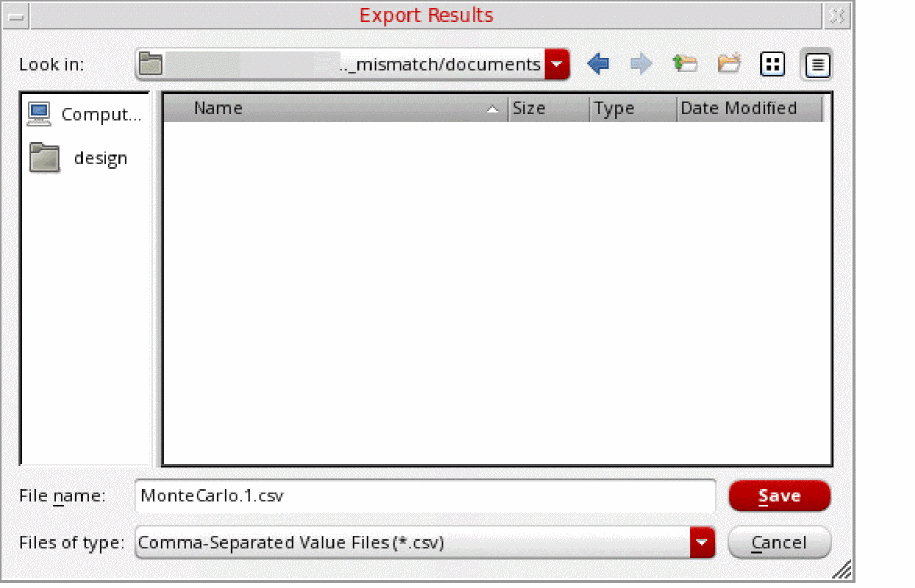

Exporting Mismatch Contribution Results
You can export the results of mismatch contribution analysis to a CSV file for post-processing.
To export the results of mismatch contribution analysis to a CSV file:
-
On the Mismatch Contribution tab of the Sensitivity Analysis-MonteCarlo.N form, choose File – Export Result to CSV – Current Tab.
The Export Results form opens.
 - In the File Name field, specify the name of the CSV file to which you want to export the results of mismatch contribution analysis.
- Click Save.
For mismatch contribution results, data in the CSV file after exporting results is displayed exactly the same way as it is displayed in the Mismatch Contribution table.
For example, on the Mismatch Contribution table, if you have:
-
selected instances to display hierarchically and descended to the level,
AmpIn. - filtered data to display only the instances that have a contribution value equal to or greater than 8%.
- selected data to display as variance.
Data in the mismatch contribution table is displayed as follows:
The following figure shows an example of the contents of the CSV file, when the results are exported to the CSV file.
You can observe that the CSV file contains data exactly as you see it in the mismatch contribution table.
Related Topics
Mismatch Contribution Analysis
Running Mismatch Contribution Analysis
Viewing Results of Mismatch Contribution Analysis
Return to top